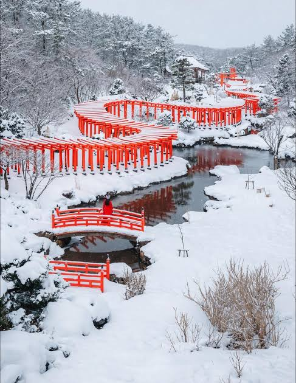
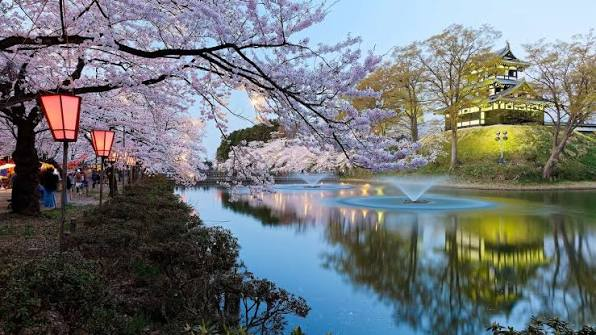
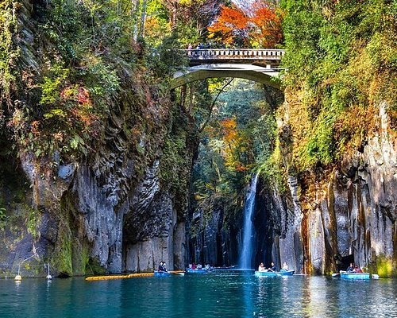
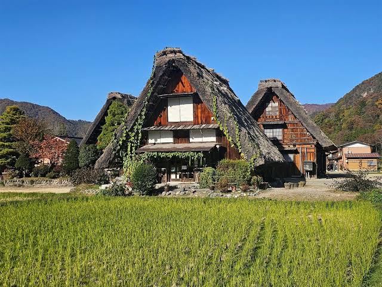

Асахикава — второй по величине город острова Хоккайдо в Японии и административный центр округа Камикава
Подробнее»Гифу — центральный город Японии, административный центр одноименной префектуры Гифу в регионе Тюбу
Подробнее»Миядзаки - город в Японии, административный центр одноименной префектуры, расположенный на юго-восточном побережье острова Кюсю.
Подробнее»Ниигата — крупный портовый город и административный центр одноименной префектуры на западе острова Хонсю в Японии, выходящий к Японскому морю
Подробнее»Фукусима это префектура на северо-востоке Японии (в регионе Тохоку), её административный центр, а также название крупнейшей атомной электростанции («Фукусима-1»), ставшей местом тяжелейшей радиационной аварии
Аомори - это портовый город и административный центр одноимённой префектуры, расположенный на севере острова Хонсю в регионе Тохоку, Япония